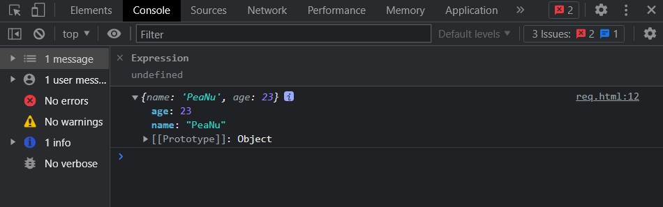
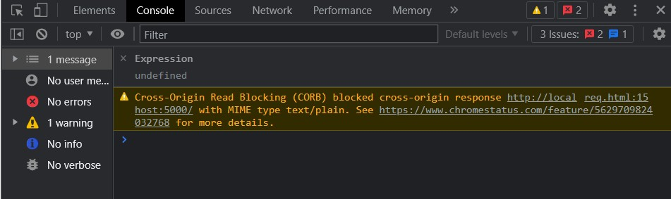
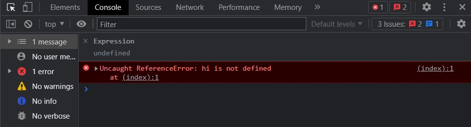

時代的眼淚？
原理簡述
利用 <script> 的 src="..." 可以跨網域存取資料的特性，搭配 callback function 來實現跨域請求的技術。
要注意的是 JSONP 只能應用在 GET，沒辦法 POST，因為只有 GET 會透過網址帶資料給後端（可以參考這裡）
接下來我會分別實作「後端」跟「前端」實際在使用 JSONP 的時候會怎麼做設定。
後端該做的事
大致的思路是這樣：
- 準備好要給前端的資料
- 取得 url 中的
query字串 - 根據
query回傳對應的內容（其實就是執行一個 function，讓前端可以透過 function 裡的參數拿到資料）
1 | // 建立 server 的模組 |
前端該做的事
大致的思路是這樣：
- 建立一個用來接收資料的 function（
getUser） - 開一個
<script>用src向伺服器發出請求，並帶上callback參數來對應到第一步設好的 function
這裡要特別強調一下順序：先定義 function => 發出 request
不然在發 request 的時候 function 根本就還沒被定義，就等著吃 error。
備註：除非你設定 <script asnyc> 強制轉成非同步，不然就一定要按照上面的順序。
1 | <script> |
如果順利的話，最後就能成功拿到資料：

備註
在這裡紀錄一下實作時碰到的問題。
本來我是想分成：
- 如果有帶上 callback 參數，後端就 回傳對應的 function
- 如果沒有帶參數，後端就 回傳純字串的 JSON 資料
所以後端的部分設定成這樣：
1 | // 伺服器設定 |
在有帶上 callback 參數的時候沒有問題，但是沒有的時候就會出現 CORB 的錯誤：

本來以為是回傳內容的問題，所以我又把 res.write(JSON.stringify(data)) 改成 res.write('hi')：

簡單來說，如果你想要用這種塞在 <script> 裡面的方式來傳 JSON 資料，那就 一定要用 JSONP 來傳，不然瀏覽器會把 response 給擋下來。
至於第二個 res.write('hi') 的結果也告訴我們，如果不是 JSON 資料的話就沒關係，但是這樣就沒有什麼意義了，因為等於前端只拿到一個裡面寫了 hi 的 js 檔案，所以最後執行這個檔案的時候才會噴 Uncaught ReferenceError。